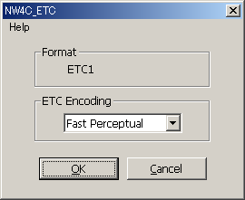

Running this filter applies an ETC compression format to what is displayed.
Select all channels and select Filter > NintendoWare for CTR > NW4C_ETC. A dialog box appears.

Format displays the format being applied (ETC1 or ETC1_A4). If the alpha channel is selected, or if the selected layer contains transparent pixels, ETC1_A4 is displayed. ETC1_A4 is also displayed if the image height or width is less than 16. (If it is a mipmap image, the determination is based on the height and width of the smallest level.)
For ETC Encoding, select the compression method.
Fast, Medium, and Slow indicate the compression-calculation speed. A slower calculation speed can improve image quality.
Options that contain the word Perceptual are compression methods that calculate the G color component with less error. (Humans perceive green better than other colors). If you are working with textures for normal maps, we recommend using a method marked as Perceptual.
Click OK to run the filter.
The filter only runs if the image mode is RGB Color.
You cannot run the filter on 16-bits-per-channel files.
The filter only runs if the height and width of the image are both powers of two between 8 and 1024.
But it can also run on mipmap and cube map images.
If an alpha channel is present, be sure to run the filter with all channels selected. (You can hold SHIFT and click to select multiple channels.)
You cannot run the filter if there are two or more alpha channels.
If there are multiple View layers, merge them before running the filter.
If the image includes only layers and no background, the pixel opacity is processed as the alpha if there is no alpha channel.
If the image has not been edited since the last time the ETC filter was applied, a warning dialog box is displayed when the filter is applied a second time. Click Yes to continue or No to cancel.
Use the following procedure to create mipmap images that have an ETC filter applied.
CONFIDENTIAL